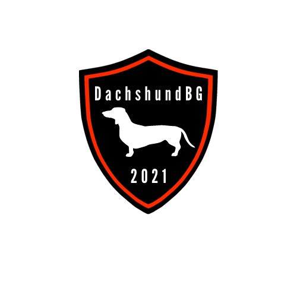

DachshundBG
ВИДОВЕ ДАКЕЛИ
От десетилетия дакелът е познат в 3 големини – дакел, миниатюра и заешки, и в три типа на косъма: късокосмест, грубокосмест и дългокосмест. Характеризира се с нисък ръст, издължено тяло и къси крайници (обикновено предните са късо поставени). Муцуната е сравнително дълга, с тъмна на цвят носна гъба. Очите са тъмни, средно големи. Ушите са доста дълги, висящи, меки и тънки. Опашката достига на дължина до лапите на задните крайници; обикновено се носи отпусната надолу. При дългокосместите косъмът е дълъг, прав, мек, лъскав, плътно покриващ ушите, шията, гърдите, задната страна на предните и задните крайници, като главата е покрита с къси косми. Окраската на космената покривка обикновено е червеникаво-кафеникавожълтеникава в различни оттенъци, но се среща и черна с кафяви петна над очите и по краката, петниста и тигрова (съчетание от сиво, черно и кафяво). Дакел и ротвайлер са единствените породи кучета, които имат под кожата си мъхеста кожа. Тази кожа пада през 10-ия месец и продължава почти 1 месец. Кучето трябва всеки ден да се сресва с гребен. Дакелът не трябва да яде повече от 5 пъти дневно, защото започва да повръща. Коремът му се подува и не трябва да се движи 1 час. Дакелът много се привързва към стопанина си. Той е много подходящо куче за отглеждане в